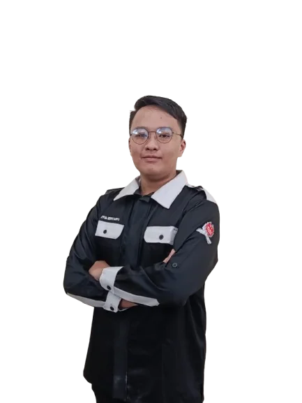
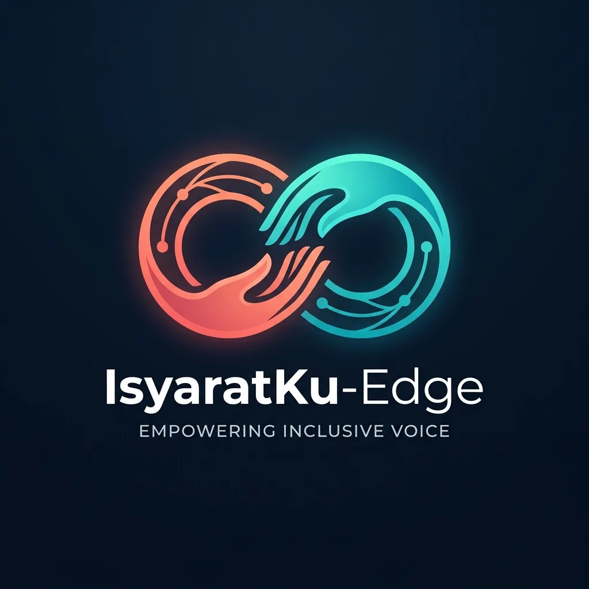
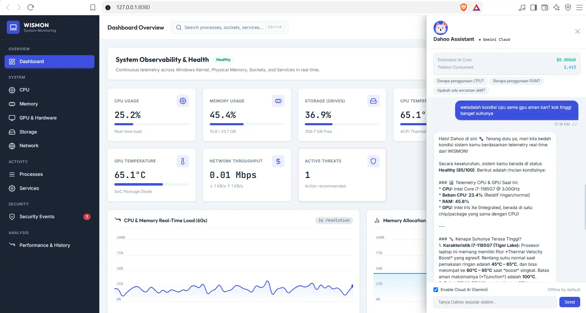
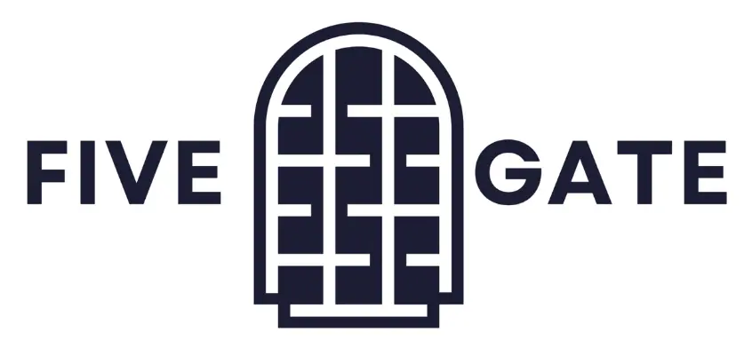
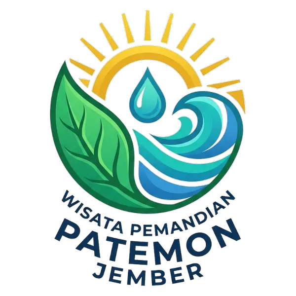

Computer Engineering student at Politeknik Negeri Jember.
Computer Engineering Student
IoT Engineering
& Full Stack
Web Dev.
Saya Aiyub Heriyanto, mahasiswa D3 Teknik Komputer di Politeknik Negeri Jember yang berfokus pada Full Stack Web Development, Internet of Things, dan Artificial Intelligence.
Rasa Framework
IoT
AI
Backend Web
Full Stack

Current Position
Intern at Otorita IKN
Deputi Transformasi Hijau dan Digital · Direktorat Kecerdasan Buatan
01 / Profil

Internship experience at PT Universal Big Data & Otorita IKN.
Focus areas: Full Stack Web Development, IoT, and AI.
Membangun solusi digital dari web, data, perangkat terhubung, sampai AI.
Saya sedang menempuh Diploma 3 Teknik Komputer di Politeknik Negeri Jember. Minat utama saya berada pada pengembangan aplikasi full stack, integrasi API dan database, IoT, serta pemanfaatan AI untuk menyelesaikan masalah nyata.
Perjalanan profesional saya dimulai melalui internship 6 bulan di PT Universal Big Data. Di sana saya menjadi Team Leader untuk QuraniBot, chatbot berbasis Rasa Framework, dan ikut berkontribusi dalam tim C# web scraping menggunakan Nobox.
Lihat Profil LinkedIn02 / Skill Focus
Area teknis yang sedang saya bangun dengan serius.
Full Stack Web Development
Membangun frontend, backend, integrasi API, database, dan alur aplikasi yang siap digunakan.
Internet of Things
Mengeksplorasi perangkat terhubung, data sensor, dan cara mengubah konektivitas menjadi solusi digital.
Artificial Intelligence
Mempelajari penerapan AI, chatbot, otomasi, dan solusi cerdas yang bisa mendukung pengambilan keputusan.
Team Coordination
Berpengalaman memimpin tim kecil, mengatur proses pengembangan, dan menjaga komunikasi proyek tetap jelas.
03 / Experience
Perjalanan profesional yang membentuk perspektif saya.
Aug 2026 – Dec 2026 · 5 bulan
Artificial Intelligence Intern
Deputi Bidang Transformasi Hijau dan Digital · Direktorat Kecerdasan Buatan
📍 Penajam Paser Utara, Kalimantan Timur · On-site
Mengembangkan pemahaman tentang penerapan teknologi, software, dan solusi digital di lingkungan transformasi hijau dan digital pada ibu kota baru Indonesia.
Kerja Tim
Komunikasi
Artificial Intelligence
Digital Solutions
Dec 2022 – May 2023 · 6 bulan
Student Intern
Apprenticeship
📍 Ruko Modern Kav A16-A17, Malang, Jawa Timur · On-site
Menjadi Team Leader untuk team chatbot QuraniBot berbasis Rasa Framework dan berkontribusi dalam tim scraping marketplace menggunakan C# dan Nobox.
C#
Python
Rasa Framework
Team Leadership
Web Scraping
04 / Projects
Proyek dan pengalaman yang membentuk cara saya bekerja.

SIM - ASET
Sistem Inventaris Manajemen Aset Tingkat Pemerintah Daerah (Pemda)
Sistem Inventaris Aset Daerah berbasis Laravel untuk mengelola data barang, stok, peminjaman, pengembalian, serta laporan operasional inventaris di lingkungan pemerintah daerah.
Laravel 12.x
PHP 8.2
MySQL
Bootstrap 5.x
Spatie Permission

IsyaratKu-Edge
Machine Learning Pendeteksi Hand Gesture Berbasis IoT
IsyaratKu-Edge adalah sistem pengenalan dan penerjemahan gestur bahasa isyarat secara real-time berbasis Machine Learning untuk perangkat edge. Sistem ini menggabungkan YOLOv8, MediaPipe, 1D-CNN, dan LSTM untuk mendeteksi tangan, mengekstraksi landmark, mengenali pola gestur secara spasial dan temporal, kemudian menerjemahkannya.
Machine Learning
Gesture Recognition
Python
IoT

WISMON
Windows System Monitoring
Project monitoring windows yang lebih dari sekedar Task Manager lakukan. Melakukan tindakan pencegahan pada setiap anomali events yang terjadi pada system windows dan bahkan melakukan traffic network pada OS Windows. Ditemani dengan chatbot bernama Dahoo yang dapat membantu user dalam menangani permasalahan pada sistem.
Python
Chatbot
JavaScript

FiveGate
Sistem Akses Pintu Berbasi RFID dan Face Capture
FiveGate Project merupakan platform sistem akses pintu berbasis RFID dan Face Capture yang mengintegrasikan teknologi RFID, pengambilan gambar wajah, kamera, dan sistem manajemen berbasis web. Sistem ini dirancang untuk mengelola proses autentikasi pengguna melalui RFID, pengambilan data wajah untuk verifikasi, mengendalikan akses pintu secara otomatis, memantau aktivitas perangkat secara real-time, serta menyimpan riwayat akses untuk kebutuhan monitoring dan audit keamanan.
Internet Of Things
Laravel 12.x
MongoDB
HiveMQ
Docker
Kubernetes

Company Profile & Cashier
Aplikasi Kasir Pemandian Patemon Jember
Project yang dibuat pada bulan Mei 2023 tentang Aplikasi Web Kasir dan Company Profile Pemandian Patemon Jember. Dikembangkan lagi pada September 2026 ke versi 2.0.0 menggunakan arsitektur yang masih sama yaitu PHP Native namun dengan peningkatan Role Based Access Control, Don't Repeat Yourself dengan mengambil referensi standart system dari project SIM-ASET
PHP
MySQL
MVC
RBAC
DRY/Master Layouting
05 / Sertifikat
Sertifikat dan Lisensi saya.
E-Certificate Workshop Laravel Intermediate
Berhasil menyelesaikan Workshop Laravel Intermediate yang diselenggarakan Dunia Coding dengan membuat Aplikasi Toko menggunakan Laravel dalam 2 Hari.
06 / Contact
Mari terhubung untuk belajar, berkolaborasi, atau membangun solusi digital berikutnya.
Saya terbuka untuk peluang baru, proyek kolaborasi, atau sekadar berbagi ide.
Lihat langsung di LinkedIn saya:
Data Experience, Education, Sertifikat, dan Projects selalu up-to-date mengikuti profil LinkedIn.